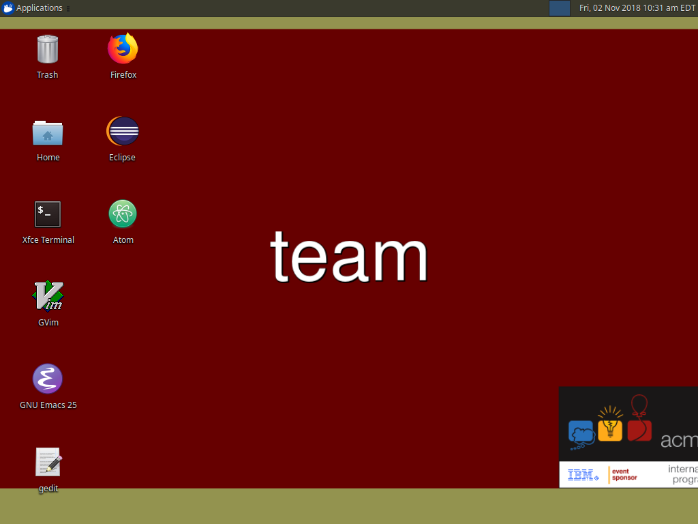
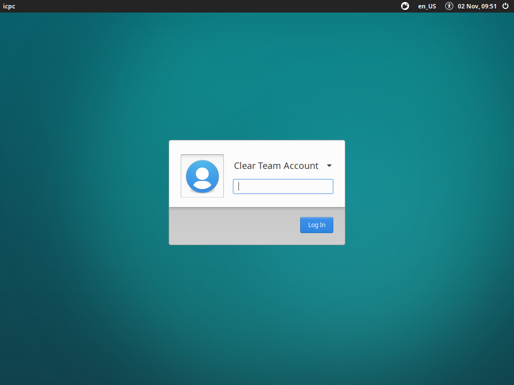
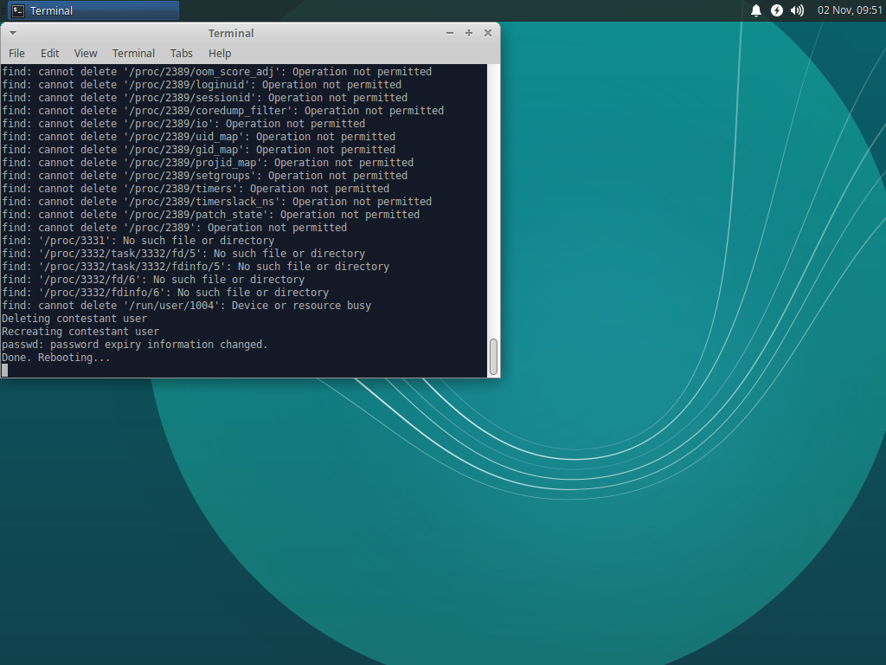

In the top left corner of the screen, click on "Applications", then select "Log Out" from the menu.

After the practice round, we need to reset the team account so all files are deleted.

In the top left corner of the screen, click on "Applications", then select "Log Out" from the menu.
At the dialog, select "Log Out"

On the login screen, make sure the user selected is "Clear Team Account". Then enter the system password(Ask your site director)

This will automatically start a process to wipe the account, and it will reboot once done.

After the system reboots, make sure to follow Pre Contest Tasks to have the system ready to go again.